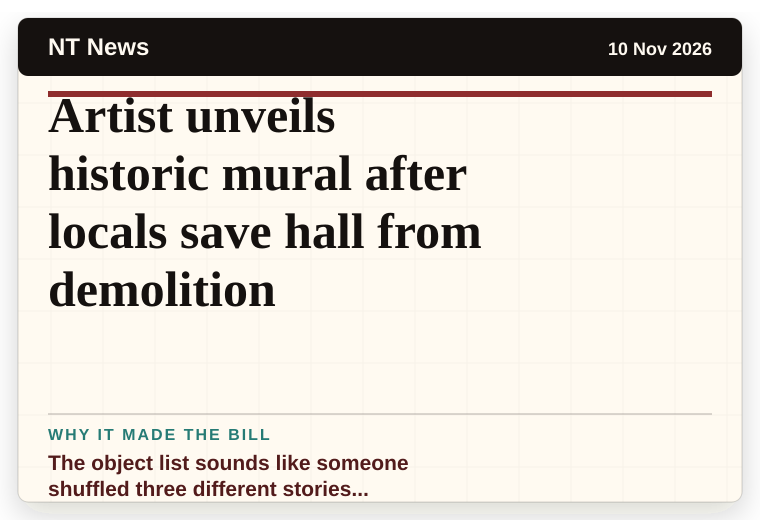
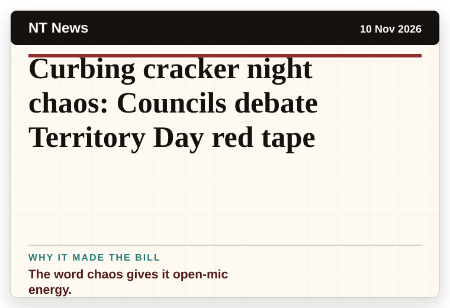
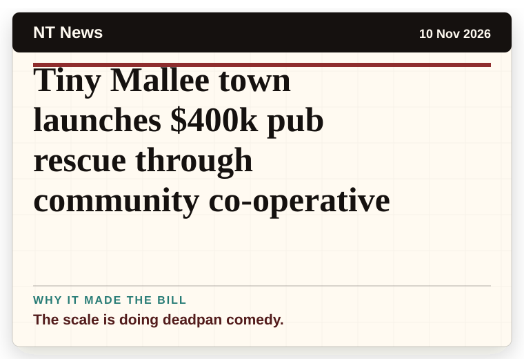
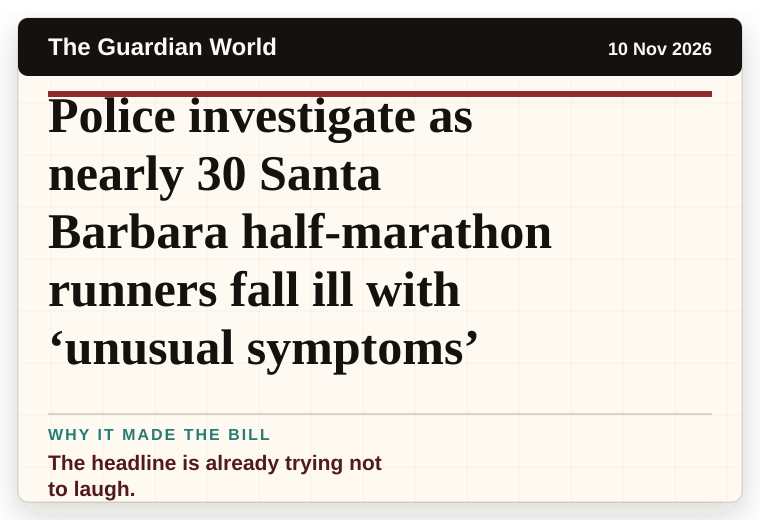
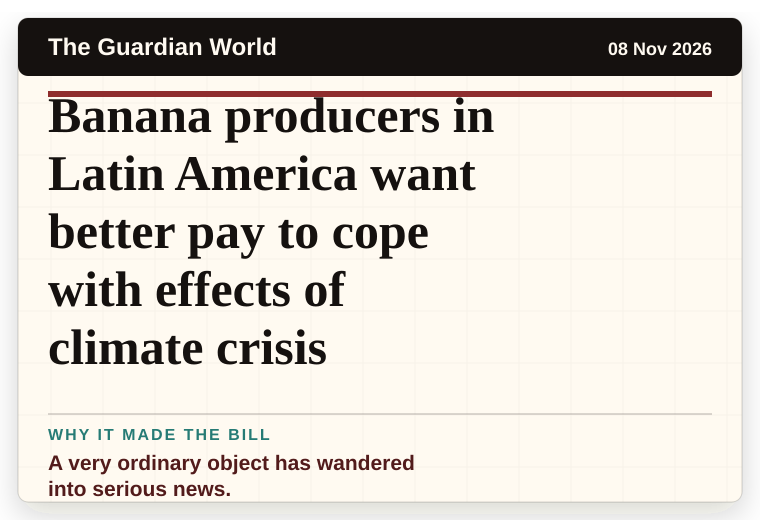
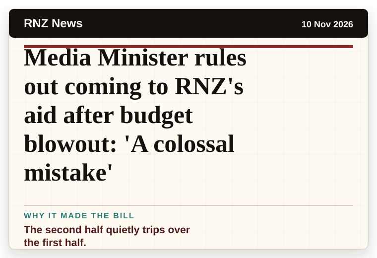
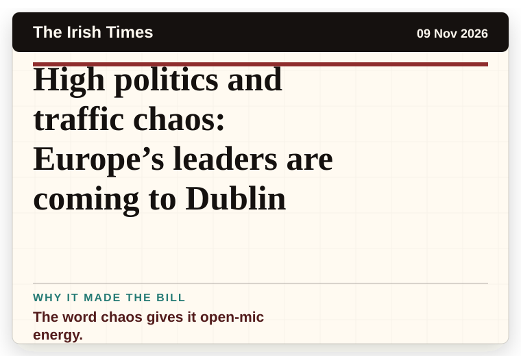

NT News
Australia
Artist unveils historic mural after locals save hall from demolition
The object list sounds like someone shuffled three different stories together.
The latest daily picks, linked back to the original sources. Search the room, pick a source, or follow a headline out to the full story.
Record updated: 10 Nov 2026, 01:42 PM AEST
Showing 17 headline candidates from the refresh run completed on 10 Nov 2026, 01:42 PM AEST.

The object list sounds like someone shuffled three different stories together.

The word chaos gives it open-mic energy.

The scale is doing deadpan comedy.

A household object has somehow reached the news desk.

A wonderfully specific detail has taken centre stage.

The word chaos gives it open-mic energy.

It has the shape of a tiny adventure reported with a straight face.

The scale is doing deadpan comedy.

The object list sounds like someone shuffled three different stories together.

The headline is already trying not to laugh.

A wonderfully specific detail has taken centre stage.

A wonderfully specific detail has taken centre stage.

A mystery is doing a lot of work in a very small sentence.

The headline is already trying not to laugh.

A very ordinary object has wandered into serious news.

The second half quietly trips over the first half.

The word chaos gives it open-mic energy.